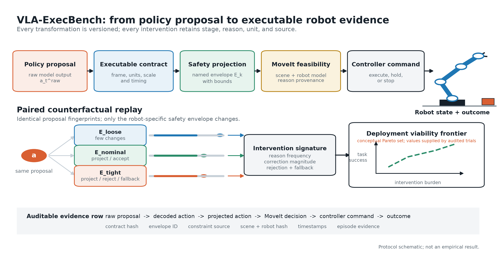

Vision-Language-Action
SmolVLA、OpenVLA、π 系列和其他开放策略的复现、适配与任务数据设计。
Embodied AI · Robot Learning
Independent research & engineering
我关注视觉-语言-动作模型如何从离线策略输出走向安全、可复现的真实机械臂执行。目前的工作围绕紧凑型 VLA 原型、ROS 2 + MoveIt 接口，以及面向执行过程的评测方法展开。
核心问题包括动作表示与机器人接口的对齐、部署时安全约束、策略服务延迟，以及不同机器人配置下结果是否仍然可比较。

研究目标不是单独提高模型分数，而是建立从策略提议到机器人结果的可执行、可解释和可复现链路。
SmolVLA、OpenVLA、π 系列和其他开放策略的复现、适配与任务数据设计。
动作限幅、坐标系与单位契约、碰撞检查、工作空间约束和失败回退。
策略服务、端到端延迟、配对回放，以及跨安全边界和机器人配置的执行评测。

把策略提议、动作契约、安全投影、MoveIt 可行性判断、控制器命令和任务结果连接成可审计证据链，并支持同一动作在不同安全边界下的配对回放。
Action contracts · safety envelopes · counterfactual replay
以 SmolVLA / LeRobot 为入口，建设小规模数据采集、策略推理服务和桌面机械臂演示流程；先验证单任务稳定性，再扩展任务和场景。
SmolVLA · LeRobot · low-cost data collection
把模型动作转换为明确的机器人坐标和单位，在下发前执行边界、速度、碰撞与可达性检查，并保留拒绝或修正动作的原因。
ROS 2 · MoveIt 2 · dry-run validation
以下均为进行中的研究手稿，不代表已经投稿或发表。
Working draft · VLA execution safety and benchmark design
Working draft · adaptation under limited data and compute
Working draft · remote inference and local safety control
用于支持模型选择和演示样机决策的持续调研。
当前公开联系方式为 GitHub @zch1414。
{kind=link}